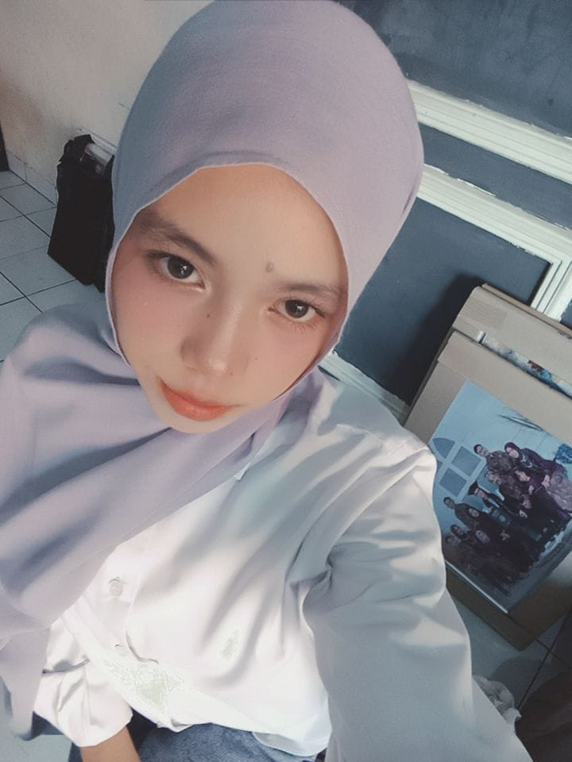
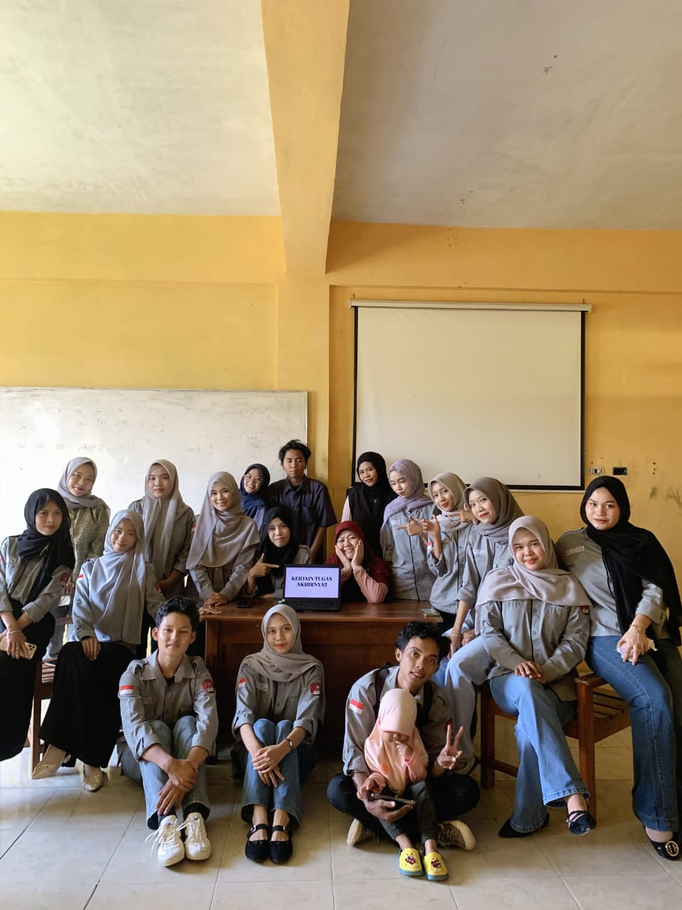
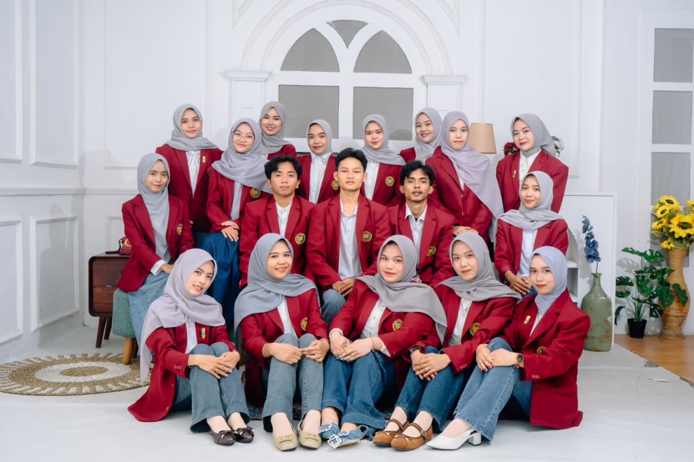

Website ini merupakan media informasi dan dokumentasi pribadi yang memuat profil,
aktivitas perkuliahan, karya, serta perjalanan akademik saya sebagai mahasiswi
Program Studi Pendidikan Matematika di Universitas Muhammadiyah Kotabumi. Melalui website ini,
saya ingin berbagi cerita, karya, dan perkembangan diri saya selama menempuh
pendidikan, khususnya dalam bidang pendidikan matematika dan pengembangan
keterampilan digital.
Website ini dibuat sebagai media informasi dan dokumentasi pribadi yang memuat
profil, aktivitas perkuliahan, karya tulis, serta berbagai proyek yang telah saya
kerjakan selama menjadi mahasiswi. Melalui website ini, pengunjung dapat mengenal
lebih dekat siapa saya, apa yang sedang saya pelajari, dan bagaimana perjalanan
akademik saya berkembang dari waktu ke waktu.
Sebagai mahasiswi Pendidikan Matematika, saya memiliki ketertarikan pada cara
menyampaikan konsep-konsep matematika secara sederhana, menarik, dan mudah
dipahami. Saya percaya bahwa matematika bukan sekadar angka dan rumus, melainkan
cara berpikir logis yang dapat diterapkan dalam kehidupan sehari-hari. Oleh karena
itu, saya terus berusaha mengembangkan kemampuan mengajar sekaligus memperluas
wawasan di bidang teknologi, termasuk pemrograman dan desain web, agar dapat
menghadirkan media pembelajaran yang lebih interaktif di masa depan.
Selain sebagai sarana publikasi, website ini juga berfungsi sebagai media
komunikasi dan portofolio digital saya. Berbagai materi pembelajaran, dokumentasi
kegiatan, karya, dan informasi lainnya disajikan untuk mendukung proses belajar
serta memperluas akses informasi bagi siapa saja yang mengunjungi halaman ini.
Saya berharap website ini dapat menjadi wadah yang bermanfaat untuk mendokumentasikan
perjalanan akademik saya, sekaligus menjadi ruang berbagi ilmu dan inspirasi bagi
mahasiswa lain, khususnya di bidang pendidikan matematika dan pengembangan diri.
Profile

Dea Handayani
Mahasiswi Program Studi Pendidikan Matematika di Universitas Muhammadiyah Kotabumi, dengan minat
pada bidang pembelajaran matematika, media pendidikan interaktif, serta pengembangan dasar-dasar pemrograman dan desain web.
Dalam menjalankan peran sebagai calon pendidik, saya berfokus pada penguasaan konsep
matematika secara mendalam sekaligus kemampuan menyampaikannya dengan cara yang
kreatif dan adaptif terhadap perkembangan zaman. Selain mengikuti perkuliahan, saya
aktif mengikuti kegiatan organisasi di bawah naungan program studi saya, serta terus
belajar mengenai teknologi pembelajaran, termasuk penyusunan materi digital dan
pengembangan website sederhana sebagai media pendukung pembelajaran.
Saya meyakini bahwa penguasaan teknologi menjadi bekal penting bagi seorang pendidik
di era digital. Oleh karena itu, saya berupaya menyeimbangkan kompetensi di bidang
pendidikan matematika dengan keterampilan teknis seperti pemrograman web, agar dapat
menciptakan media pembelajaran yang lebih menarik, efektif, dan relevan bagi siswa di masa depan.
Gallery Kegiatan
Foto 1

Kegiatan Perkuliahan
kegiatan perkuliahan rutin mata kuliah statistika matematika
Foto 2

PMTK Angkatan 23
Foto bersama mahasiswa pendidikan matematika angkatan 23
Koleksi Video
video kegiatan organisasi
ini merupakan video kegiatan organisasi ikatam mahasiswa matematika